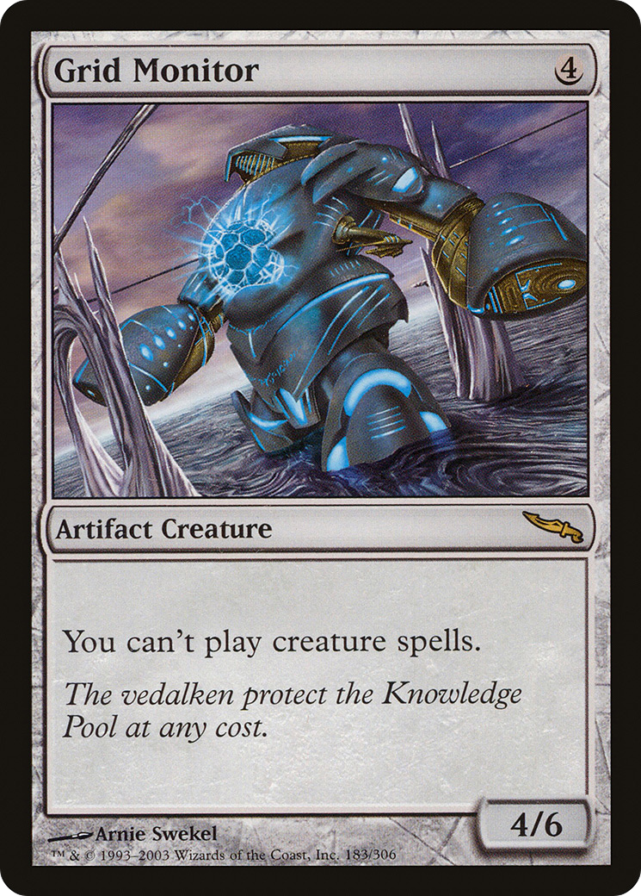

Some Magic cards come with multiple modalities; different sets of information about the card to be used in different situations.
- Double-faced cards have both a front face and a back face.
- Adventurer cards have a "main" card and then a smaller inset instant or sorcery with the "Adventure" subtype.
- Split cards have two equivalent instants/sorceries.
- Flip cards have two text boxes at 180 degrees.
- Prototype cards have an alternate text box, mana cost, and size.
- Morph cards have an option to be turned face-down.
- Bestow cards have an ability that let them be cast as Auras instead of creatures.
- Mutate cards can be cast as "mutating creature spells" which then become part of an existing creature on the battlefield.
- Class and Leveler cards have a level that determines their current abilities and/or size.
- Vehicles have the ability to turn into a creature and use their printed size.
- Overload and cleave cards have the ability to be cast with modified text, and splice cards can do the same to other instants and sorceries.
As you can see, there isn't a clear delineation between what cards are or aren't "multi-part". All cards are multi-part in the sense that they can all be face down, bestow cards have two very distinct modalities despite having a normal-looking frame, leveler cards have a special frame but "under the hood" just have static abilities that change their other abilities and size depending on the number of level counters on them, etc.
So instead of comprehensively going over specific kinds of multi-part cards, this course will instead discuss the general framework that they all fit into, giving you the tools to deal with any particular ones as they arise. As always, the best way to deal with a specific new ability or layout you haven't seen before is to look up its section in the rules.
The two zones in which the majority of interaction takes place are the stack and the battlefield. Accordingly, all existing multi-part cards are focused on those two zones, and don't do anything interesting anywhere else. All multi-part cards except split cards have a single "primary" part, and that part's characteristics are used in any zone other than the stack or battlefield. Double-faced cards have a front face, Adventurer cards have a normal non-Adventure portion, etc.
Split cards are the exception with two equal card halves, neither being the "primary". In non-stack zones, their characteristics are derived from both halves combined. This is still the case even if one of the halves visually looks more important, as is the case on split cards with aftermath.
Any multi-part card that has an alternate name (double-faced cards, adventurer cards, split cards, and flip cards) counts as its own conceptual "card" outside the game. If something asks you to name a card, you can choose the alternate name.
Some multi-part cards allow you to choose how to cast them. (Adventurer, split, prototype, bestow, morph, etc.) When doing so, it's only the part you're casting that "counts". For example, if you control Grid Monitor, you could cast an Adventure, but not a creature that has an adventure. You could cast a bestowed Aura, but not a creature with bestow. The card always has its "normal" characteristics in the previous zone, but for the purposes of putting it onto the stack, you treat it as having its alternate characteristics.